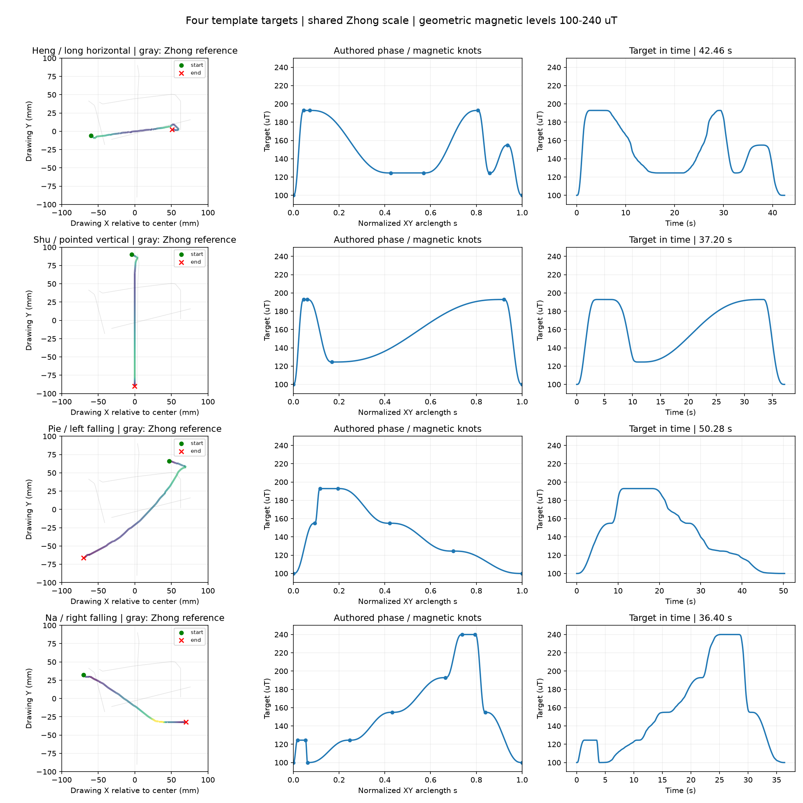
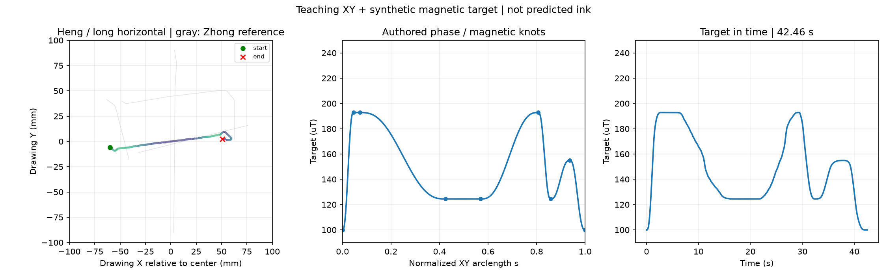
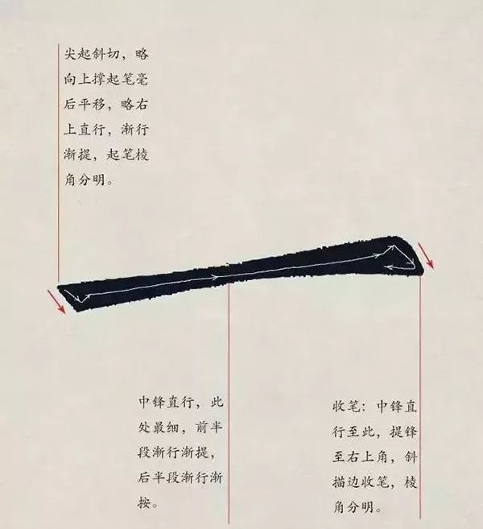
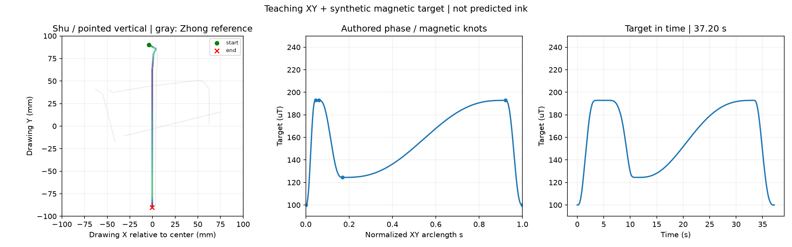
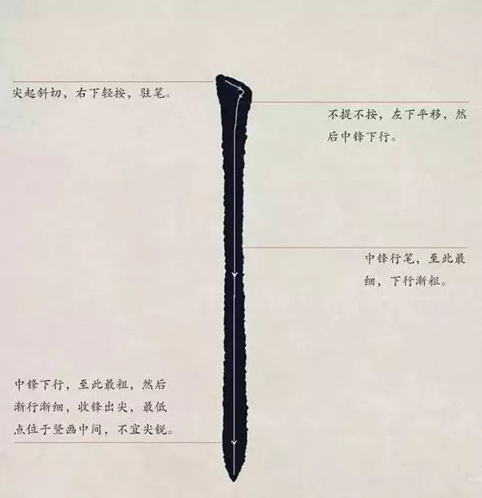
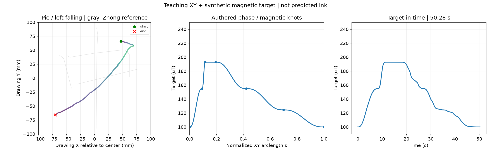
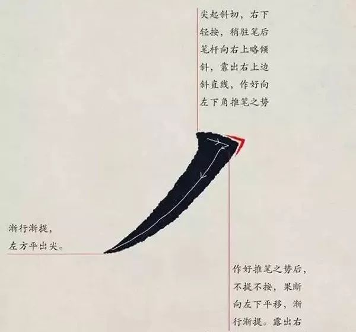
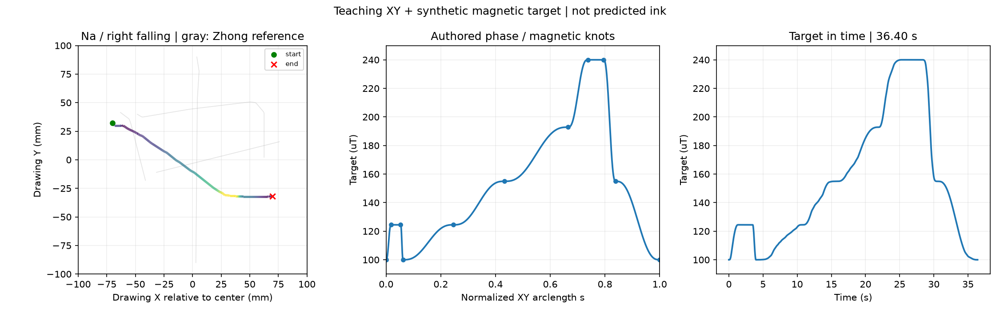
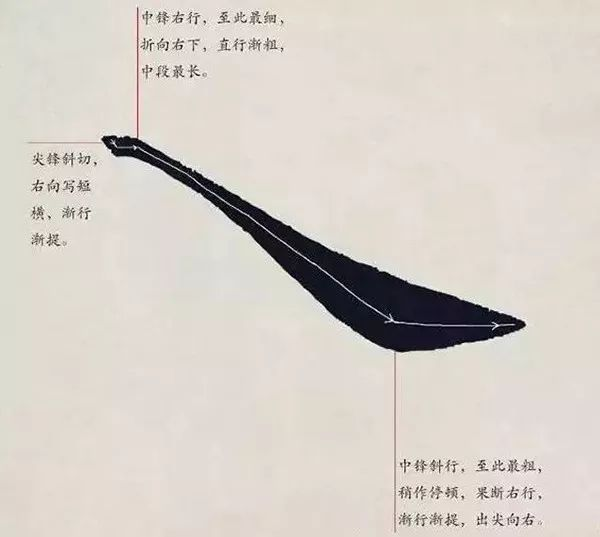

参考现有中字符号约 138.9 × 180 mm；分别使用长横、悬针竖、斜撇、斜捺的教学引导线，保留原图方向并等比缩放。四笔独立，不组成一个字。
五档磁目标为 100、124.47、154.92、192.82、240 µT。磁曲线为图像与描述指导的人工初值；颜色表示目标磁幅值，未预测真实墨迹宽度。灰线仅显示中字的尺寸参考。
默认巡航上限 10 mm/s，起收与局部动作减速，姿态沿平滑切线倾斜 15°。“稍驻”先解释为局部低速，未增加原地停顿。当前为无 Z 的离线 V3 目标；多方向与动态姿态执行、前馈适用性及笔迹效果另行验证。

XY 包围盒 120.0 × 19.4 mm；时长 42.46 s；最大 XY 速度 10.00 mm/s。
前半段渐提、中段较细，后半段渐按；末端转向收笔。
StrokePlan NPZ · 目标 CSV · 阶段控制点表 · 可复现配方 · 独立读回预览


XY 包围盒 8.1 × 180.0 mm；时长 37.20 s；最大 XY 速度 7.93 mm/s。
尖起斜切右下轻按，左下移正后中锋直下，下段渐提收尖；白线止于墨迹尖端前约8像素，保持可见端点不外推。
StrokePlan NPZ · 目标 CSV · 阶段控制点表 · 可复现配方 · 独立读回预览


XY 包围盒 140.0 × 131.8 mm；时长 50.28 s；最大 XY 速度 10.00 mm/s。
尖起右下轻按，沿右上斜边转成左下推行，弧形撇身末段渐提向左出尖；白线未标明提锋起点，按渐细末段划分出笔。
StrokePlan NPZ · 目标 CSV · 阶段控制点表 · 可复现配方 · 独立读回预览


XY 包围盒 140.0 × 64.6 mm；时长 36.40 s；最大 XY 速度 9.84 mm/s。
尖锋斜切后向右写短横，最细处折向右下行成长捺身；至粗处稍停后向右渐提平出，白线清晰终点距墨尖约11像素，不外推。
StrokePlan NPZ · 目标 CSV · 阶段控制点表 · 可复现配方 · 独立读回预览

